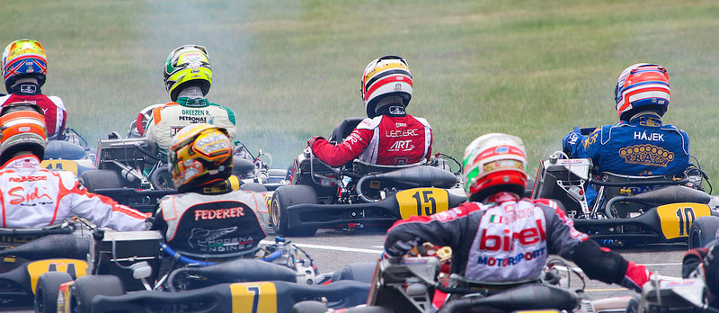

Palmarès
Charles Leclerc a fait ses débuts en Karting à l'âge de 5 ans sur le circuit de Brignoles. Même à cet âge là, il ne faut que très peu de temps au Monégasque pour développer une véritable passion pour le sport automobile. Nous suivons Charles depuis fin 2011 mais son palmarès complet est disponible ici.
En 2018, il réalise enfin son rêve et débarque en Formule 1 grâce à Nicolas Todt (son manager), Jules Bianchi qui a été son parrain sportif mais aussi grâce à un travail acharné et une motivation sans limite.
2023 :
Equipe : Ferrari
Catégorie : Formule 1 (24 courses)
- 5e du championnat (206 pts)
- 3 Podiums
- 5 Pole positions
2022 :
Equipe : Ferrari
Catégorie : Formule 1 (22 courses)
- 2e du championnat (308 pts)
- 3 victoires
- 10 Podiums
- 9 Pole positions
- 3 meilleurs tours
2021 :
Equipe : Ferrari
Catégorie : Formule 1 (22 courses)
- 7e du championnat (159 pts)
- 1 Podium
- 2 Pole positions
2020 :
Equipe : Ferrari
Catégorie : Formule 1 (17 courses)
- 8e du championnat (98 pts)
- 2 Podiums
2019 :
Equipe : Ferrari
Catégorie : Formule 1 (21 courses)
- 4e du championnat (264 pts)
- 7 Pole positions
- 2 Victoires
- 10 Podiums
- 4 Meilleurs tours
2018 :
Equipe : Alfa Romeo Sauber F1 Team
Catégorie : Formule 1 (21 courses)
- 13e du championnat (39 pts)
- Meilleure place : 6e (Azerbaïdjan)
- Premier Monégasque en F1 depuis Olivier Beretta en 1994.
2017 :
Equipe : Prema Racing (22 courses)
Catégorie : Formule 2
- Champion et meilleur Rookie
- 8 Pole positions (record historique)
- 7 Victoires (record sur une année)
- 10 Podiums
- 4 Meilleurs tours
2016 :
Equipe : ART GP
Catégorie : GP3 Series (18 courses)
- Champion et meilleur Rookie
- 4 Pole positions
- 3 Victoires
- 8 Podiums
- 4 Meilleurs tour
2015 :
Equipe : Van Amersfoort Racing
Catégorie : Formule 3 Europe (34 courses)
- Quatrième du Championnat d'Europe et meilleur Rookie
- Deuxième du Grand Prix de Macau
- 3 Pole positions
- 4 Victoires
- 14 Podiums
- 5 Meilleurs tour
2014 :
Equipe : Fortec Motorsport
Catégorie : Formule Renault 2.0 ALPS (14 courses)
- Vice Champion ALPS et meilleur Rookie
- 1 Pole position
- 2 Victoires
- 7 Podiums
Equipe : Fortec Motorsport
Catégorie : Formule Renault 2.0 Eurocup (6 courses)
- 3 Podiums